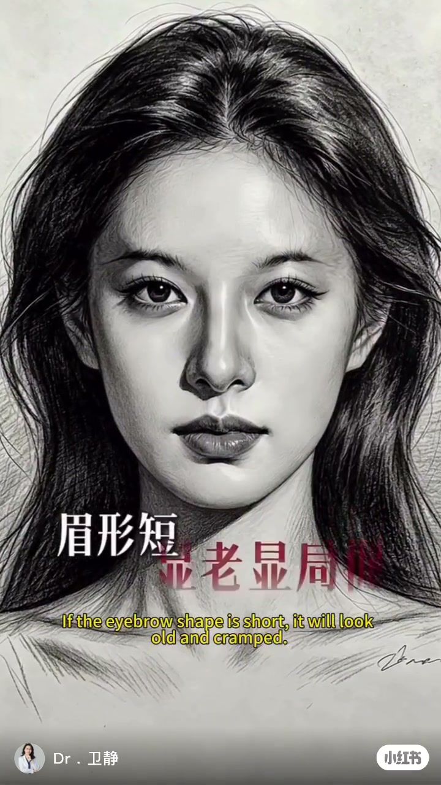
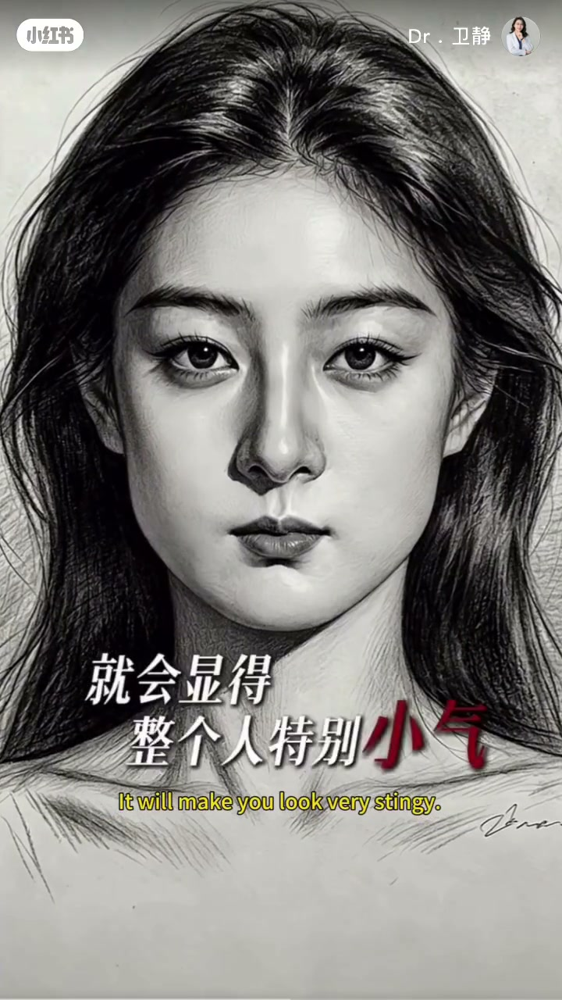
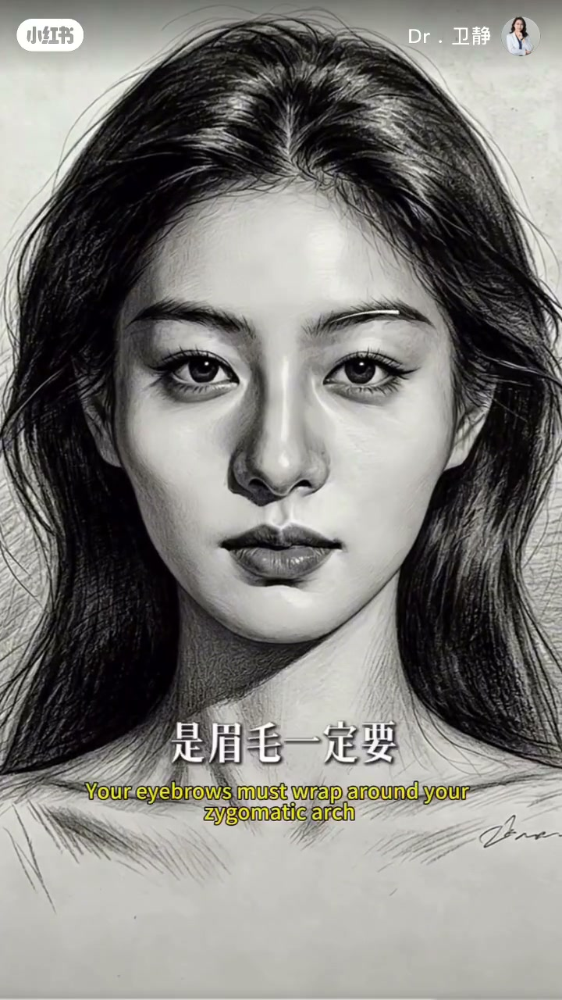

内容要点
26 秒的面部平衡速览：眉毛可以低但不可以短（眉型短显老、显局促）；中庭可以长但鬓区不能窄（窄了显脸长头大）；下颌方没问题但嘴巴太小会显得整个人小气；颧骨高是骨相优势，前提是眉毛要包裹住颧弓才有高级感。
知识结构
[00:00→00:05]
眉毛
眉毛可以低，但不可以短；眉型短就会显老、显局促。
[00:05→00:11]
中庭与鬓区
中庭可以长，但鬓区不能窄；一旦窄了就会显得脸长头大。
[00:11→00:26]
下颌、嘴巴与颧骨
下颌方没问题，但嘴巴太小会显得小气；颧骨高是骨相优势，前提是眉毛包裹住颧弓才有高级感。
总结
面部平衡的美学判断：每个部位都有「可以怎样、不可以怎样」的边界——眉毛低可以但不能短，中庭长可以但鬓区不能窄，下颌方可以但嘴巴不能太小，颧骨高是优势但要被眉毛包裹。辨识度来自比例平衡而非单点极致。
00:00-00:26三组平衡：每项优势都有一个不可越过的边界
视频用三组「可以…但不可以…」的句式讲面部平衡：「眉毛可以低，但不可以短——眉型短就会显老、显局促。」
「中庭可以长，但鬓区不能窄——一旦窄了，就会显得脸长头大。」「下颌方没问题，但如果嘴巴太小，就会显得整个人特别小气。」最后落到骨相优势上：「颧骨高，一定是你骨相的优势，前提是，你的眉毛一定要包裹住你的颧弓，才会有高级感。」四组边界共同构成一张「有辨识度的脸」的判断框架。



完整转录（16段）
以下文本由 Whisper medium 模型自动转录，可能存在少量识别误差，已尽可能修正。
眉毛可以低
但不可以短
眉型短
就会显老陷居粗
中庭可以长
但孽区不能窄
一旦窄
就会显得脸长头大
下颌方没问题
但如果嘴巴太小
就会显得你整个人特别的小气
全骨高
一定是你骨相的优势
前提呀
是你的眉毛一定要包裹住你的全公
才会有高级感